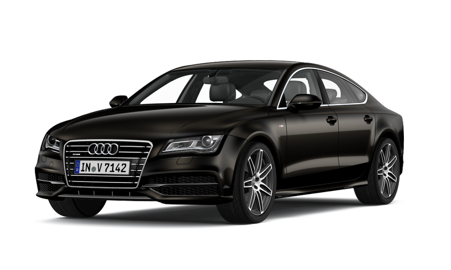
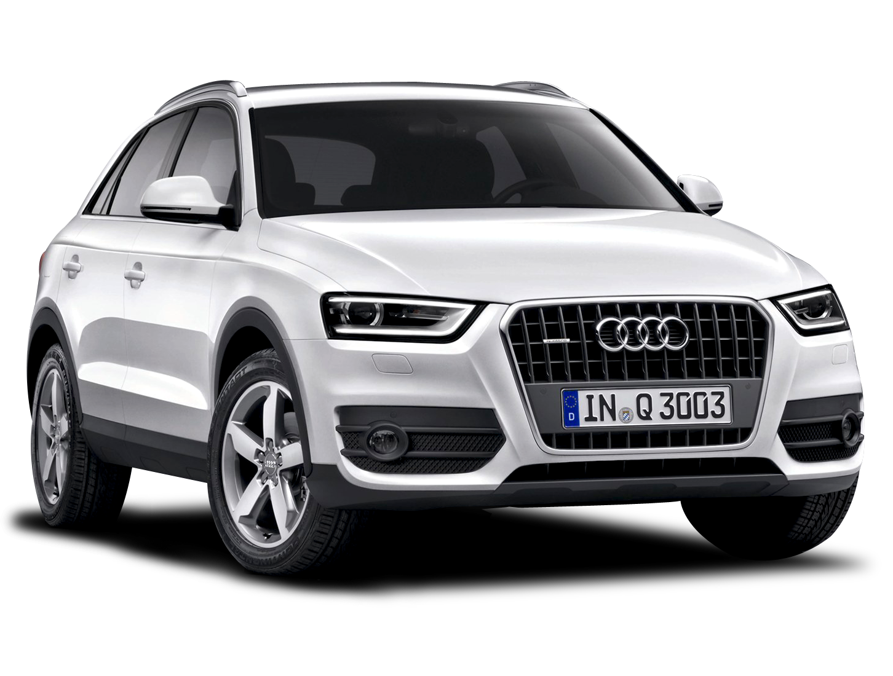

Lokacije slik
6 različnih načinov dostopanja do slik
- Remote slika na spletu
- Lokalna slika s potjo do slike iz trenutne lokacije
- Lokalna slika s potjo do slike iz trenutne lokacije, ampak krajše
- Lokalna slika v isti mapi kot .html datoteka
- Lokalna slika v isti mapi kot .html datoteka, ampak krajše
- Lokalna slika z najdaljšo obliko dostopanja do slike
Seznam:
1. Remote slika na spletu (CDN)

Neka slika shranjena na nekem tujem strežniku, nad katerim mi nimamo nadzora.
Pogled v kodo:
src="https://www.audi.com//content/dam/gbp2/experience-audi/models-and-technology/concept-cars/q4-e-tron-concept/1920x1920_A192564_large.jpg?imwidth=599&imdensity=1%22"
2. Lokalna slika s potjo do slike iz trenutne lokacije
Slika shranjena na lokalnem računalniku, vendar v podmapi.
Pogled v kodo:
src="./img/car_2.png"
2.1 Lokalna slika s potjo do slike iz trenutne lokacije, ampak krajše
Ista stvar kot zgornji primer samo, da je brez ./ (krajša oblika).
Pogled v kodo:
src="img/car_3.png"
3. Lokalna slika v isti mapi kot .html datoteka
Slika shranjena na lokalnem računalniku v isti mapi, kot html datoteka.
Pogled v kodo:
src="./car_1.png"
3.1 Lokalna slika v isti mapi kot .html datoteka, ampak krajše
Zgornji primer samo na krajše, brez ./ (krajša oblika).
Pogled v kodo:
src="car_4.png"
4. Lokalna slika z najdaljšo obliko dostopanja do slike
Najdaljša pot do slike, saj natančno določi njeno lokacijo na lokalnem disku. (Ponavadi uporabljeno kadar želimo določiti pot izven primarnega diska C: ).
Pogled v kodo:
src="file:///home/uporabnik/Desktop/SpletnaStran/img/car_6.png"